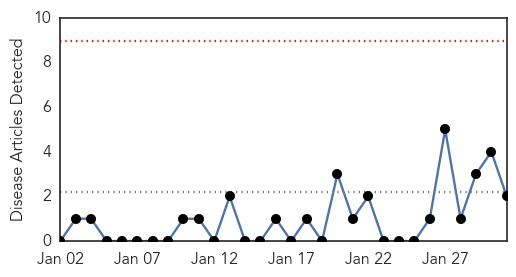

Influenza
30-Day Web Trend
0 alerts, 0 warnings
30-Day Twitter Trend
0 alerts, 0 warnings

Article Locations

Article Confidences

Top Articles:
- 0.997
- The Journal of Advanced Practice Nursing on Flu Deaths
- 0.992
- Second bird flu case confirmed in B.C.
- 0.980
- CHP closely monitors second human case of avian influenza A(H7N9) in Canada
- 0.978
- Nursing homes take flu precautions
- 0.974
- Maine flu cases triple over last flu season
- 0.915
- Tamiflu Cuts 1 Day Off Average Flu Bout, Study Finds
- 0.909
- As Flu Deaths Rise, Oklahoma County Health Officials Offer More Services
- 0.713
- Lancet Study Defends Benefits of Tamiflu
- 0.553
- Environment Canada issues special weather statement for Halton
- 0.537
- Horse flu kills racehorse
- 0.513
- Nevada becomes sixth state to report bird flu
Top Tweets:
-
No tweets found for Jan 31, 2015
Pertussis
30-Day Web Trend
0 alerts, 0 warnings

30-Day Twitter Trend
0 alerts, 0 warnings

Article Locations
Article Confidences
Top Articles:
Top Tweets:
-
No tweets found for Jan 31, 2015